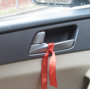

Quelle: Presseportal Polizeidirektion Hannover https://www.presseportal.de/blaulicht/pm/66841/5262554

In der Nacht zu Freitag, 01.07.2022, ist ein 59-jähriger Radfahrer an den Folgen seiner Kollision mit einer Pkw-Tür gestorben. Ein Auto-Fahrer parkte kurz zuvor am Fahrbahnrand der Calenberger Straße und öffnete seine Tür, ohne auf den rückwärtigen Radverkehr zu achten. Ein sogenannter “Doring Unfall”. Der Radfahrer konnte nicht mehr ausweichen und prallte gegen die offene Fahrertür.
Der VUD ermittelt inzwischen wegen fahrlässiger Tötung gegen den 26-jährigen Hannoveraner.
Die Polizei bittet Kraftfahrzeugnutzende nochmals eindringlich darum, beim Aussteigen auf der jeweiligen Fahrzeugseite auf den fließenden (Rad-) Verkehr zu achten. Dabei hilft der “Holländische Griff”, der Ihnen hier gezeigt wird. https://www.pd-h.polizei-nds.de/praevention/verkehrsunfallpraevention/der-hollandische-griff-115710.html
Holländischer Griff rettet Fahrradfahrer
siehe auch Berliner Kampagne zur Vermeidung von Türöffner-Unfällen: https://nationaler-radverkehrsplan.de/de/aktuell/nachrichten/berliner-kampagne-zur-vermeidung-von-tueroeffner
Planungs- und Baufehler
Traurig ist es, dass Schutzstreifen ohne ausreichenden Abstand direkt neben Parkbuchten geplant und zurzeit gerade in Hemmingen so gebaut werden.
Siehe INFA https://www.infra-hannover.de/hemmingenwesterfeld/ - Lageplan Fritz-Kuckuck-Straße https://www.infra-hannover.de/wp-content/uploads/2020/09/4656_VA5LA2.pdf - Stand 2022-07-03.